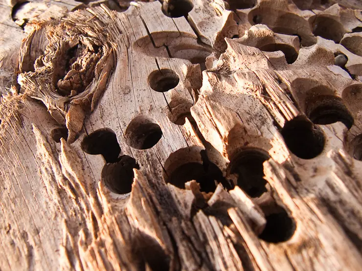

Advice
Worth knowing.
Short guides to the questions we get asked most. General information only.
 Stock photo
Stock photoAdvice Sample
Condensation or rising damp? How to tell the difference
They're mixed up all the time, and the fixes are completely different. Here's what each one usually looks like.

Stock photoAdvice Sample
Woodworm: the signs, and whether it's still active
Holes in old timber don't always mean a problem today. Here's what to look for.
 Stock photo
Stock photoAdvice Sample
Why a survey should come before any treatment
Treating the wrong problem costs money and doesn't fix the damp. Here's what a proper survey looks at.
Self check · general information
What does your damp look like?
Tick anything you've noticed. It's a rough guide to what a surveyor would look at first, not a diagnosis.
General information only. Damp often has more than one cause, and only a survey can tell you for sure. Please don't buy or inject any treatment on the strength of a checklist.
Got a question?
Ask in the chat, or book a survey.